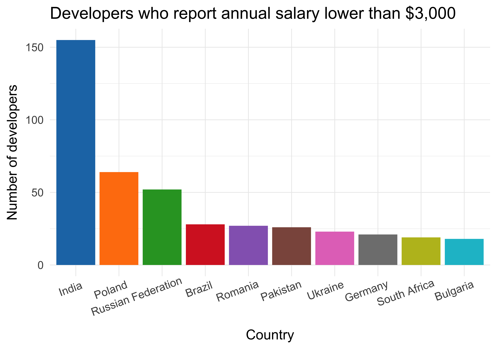

Full name: index.salary
Full name: index.mistake
val int : value:'T -> int (requires member op_Explicit)
Full name: Microsoft.FSharp.Core.Operators.int
--------------------
type int = int32
Full name: Microsoft.FSharp.Core.int
--------------------
type int<'Measure> = int
Full name: Microsoft.FSharp.Core.int<_>
How to look like a statistician
A developer's guide to probabilistic programming
Evelina Gabašová
@evelgab


Probabilistic programming
Probabilistic models

Salary distribution



What's wrong?
What is your current annual salary, in [local currency]? Please enter a whole number in the box below, without any punctuation. If you prefer not to answer, please leave the box empty/blank.

Theory
People reported their monthly salary
Mixture distributions


Probability distributions
in probabilistic programming
Mixture distribution: formally
\[\text{Salary} = p \; \mathcal{N}\left(\mu, \sigma^2\right) + \left(1-p\right) \; \frac{1}{12} \; \mathcal{N}\left(\mu, \sigma^2\right)\]
unknown: \(\mu\), \(\sigma^2\), \(p\)
?
Sampling
Sampling: example
Monty Hall problem
Monty Hall problem


Demo
Monte Carlo sampling
Demo
Representing probability distributions
with computation expressions
Mixture distribution: formally
\[\text{Salary} = p \; \mathcal{N}\left(\mu, \sigma^2\right) + \left(1-p\right) \; \frac{1}{12} \; \mathcal{N}\left(\mu, \sigma^2\right)\]
unknown: \(\mu\), \(\sigma^2\), \(p\)
Mixture distribution: informally
\[\text{Salary} = p(\text{correct}) \,\times\, \text{Annual salary} + \\ \;\;\;\;\;\;\;\;\; + \, p\left(\text{mistake}\right) \; \frac{1}{12} \,\times\, \text{Annual salary}\]
unknown: \(p(\text{correct})\), Annual salary
Inference
for mixture distributions
Easy if we knew the values of the unknown parameters
Mixture distributions
Probabilistic programming
1: 2: 3: 4: 5: 6: 7: 8: |
|
Demo
Modelling probability distributions with computation expressions
Modelling
mixture distributions
But how do we get the parameters?


The world's slowest probability inference engine

complete enumeration
Try different parameter values

Discretize
Compare two discrete distributions

|
Demo
The world's slowest probabilistic language

Probabilistic programming
in the real world
1: 2: 3: 4: 5: 6: 7: 8: 9: 10: 11: 12: 13: 14: 15: 16: 17: 18: 19: 20: |
|
Evelina Gabašová
@evelgab
|